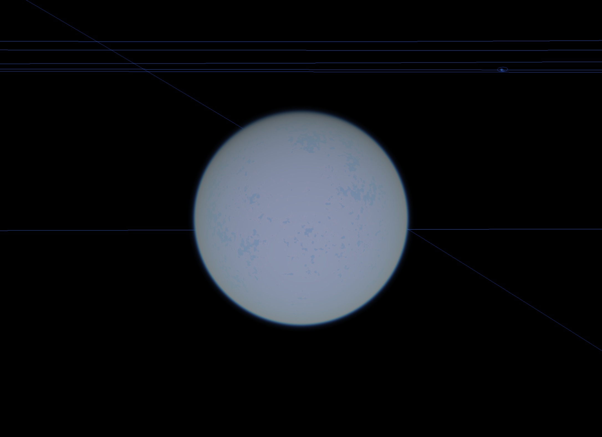

1
34
72
Pianeta 1
tempo vero
1 s = 1 s
1000 km
Pianeta 1
Ø 10.411 km
A
entra
Superficie pronta: clima ed erosione
Pianeta 1
roccioso · volge sempre la stessa faccia alla stella
B
Sintesi
Aria
Clima
Mare
Interno
Origine
Temperatura in superficie
11
°C
media in superficie
Aria
3,0 bar · 3 × Terra
N₂
56 %
CO₂
44 %
H₂O
0,2 %
ossidata
niente vita
Acqua
liquida · mare salmastro
salinità
8,8 g/kg
pH
6,5 · acido
La luce che riceve
stella 72 · 4.900 K
0,25 g
gravità
53 g
giorno = anno
615 nT
campo · 1 % Terra
Un pianeta parallelo
un impatto diverso
STATEYOUR
visore di ricerca
10
7
m
SCALA
B · esci
A · entra
tempo
inquadra
a caso
scheda
menu
STATEYOUR
M
B
A
I
F
R